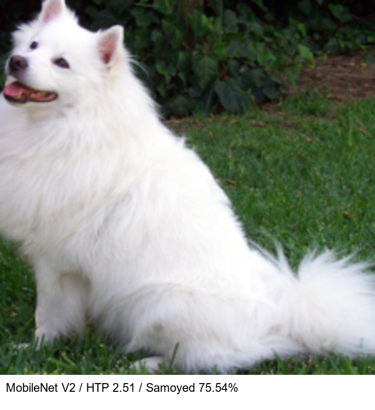
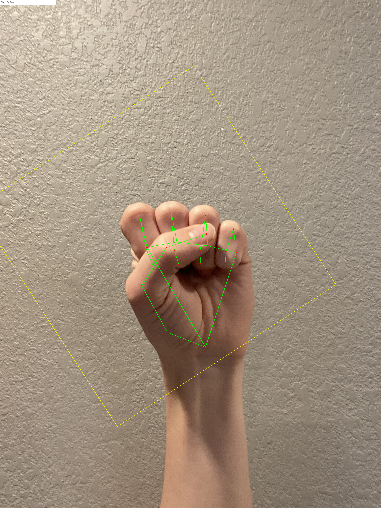
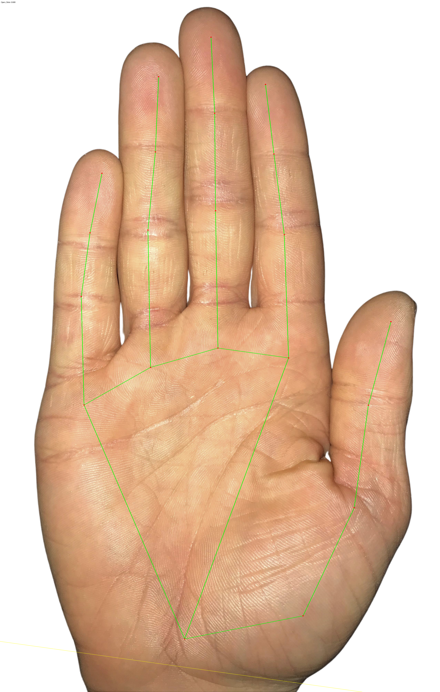
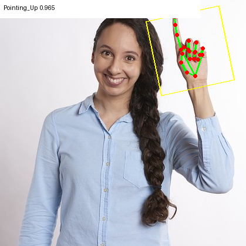
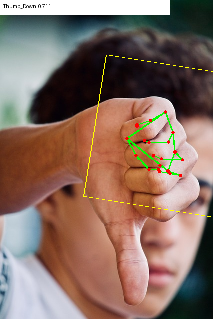
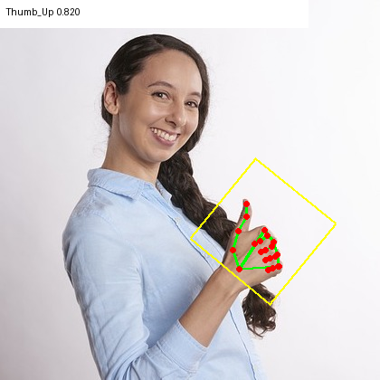
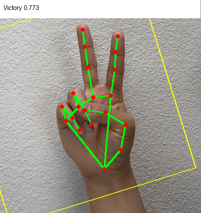
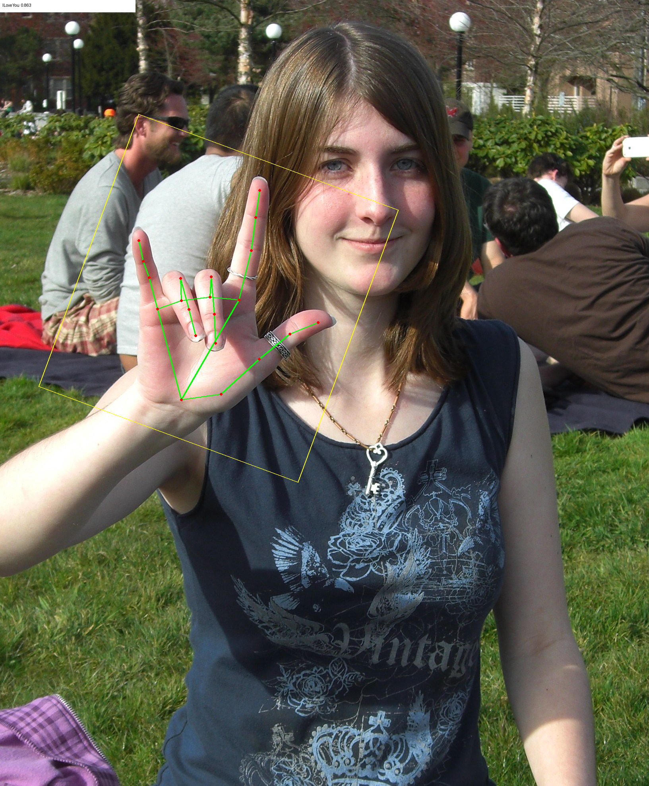

Cinco demos migradas. CNNs executadas na caixa; preparação da imagem, decodificação, NMS/regras e desenho no host. Comparação por imagem de referência, sem alegar acurácia em dataset ou FPS de câmera.
Mediana de três medianas de sessão. 50 inferências após 10 aquecimentos, mesma imagem por tarefa.
| Demo | CPU TFLite 2.8.4 | GPU TFLite 2.8.4 | HTP QNN 2.51 |
|---|---|---|---|
| Classificação — MobileNet V1 | 26.496 | 10.149 | 1.500 |
| Detecção — SSD MobileNet V1 | 35.668 | 23.559 | 3.936 |
| Pose — PoseNet | 137.924 | 15.710 | 2.201 |
| Mão recortada — Hand Landmark Lite | 55.952 | 7.742 | 1.782 |
| Segmentação — DeepLabV3 | 179.767 | 21.419 | 4.609 |
GPU usa partição OpenCL, com operadores residuais na CPU quando necessário. SSD inclui NMS no TFLite; a medida HTP exclui NMS no host. Precisões e pipelines diferem. Não são FPS de câmera.
HTP validado — QAIRT/QNN 2.51.40 — 99 eventos com ciclos HTP positivos
{"passed": true, "criterion": "same top-1 as original TFLite CPU"}
HTP validado — QAIRT/QNN 2.51.40 — 153 eventos com ciclos HTP positivos
{"passed": true, "person_box_iou": 0.9975222081121828, "criterion": "reference person IoU >= 0.7 with bounded extra detections/person duplicates"}
HTP validado — QAIRT/QNN 2.51.40 — 93 eventos com ciclos HTP positivos
{"passed": true, "median_visible_joint_distance": 0.010655304348626509, "criterion": "visible reference joints retained, median normalized joint displacement <= 0.12"}
HTP validado — QAIRT/QNN 2.51.40 — 195 eventos com ciclos HTP positivos
{"passed": true, "criterion": "same gesture/presence result as original TFLite CPU"}
HTP validado — QAIRT/QNN 2.51.40 — 210 eventos com ciclos HTP positivos
{"passed": true, "person_mask_iou": 0.976328525564234, "criterion": "person mask IoU >= 0.70 against original TFLite CPU"}
Validação anterior no mesmo firmware, preservada. A anotação usa o resultado HTP registrado.

Validação anterior no mesmo firmware. Três grafos por imagem, com perfis HTP.






